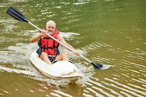

Our mission at White Water Rafting Company is simple: to provide the most thrilling and safest rafting adventures in the West. We believe that nature has the power to rejuvenate the soul, and we are passionate about sharing that experience with our customers. Join us for an unforgettable adventure!